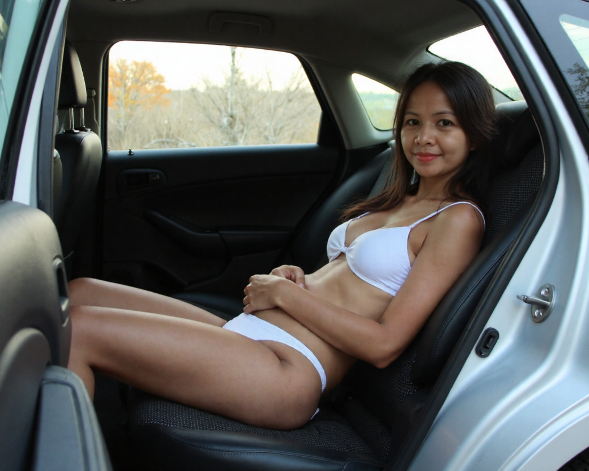
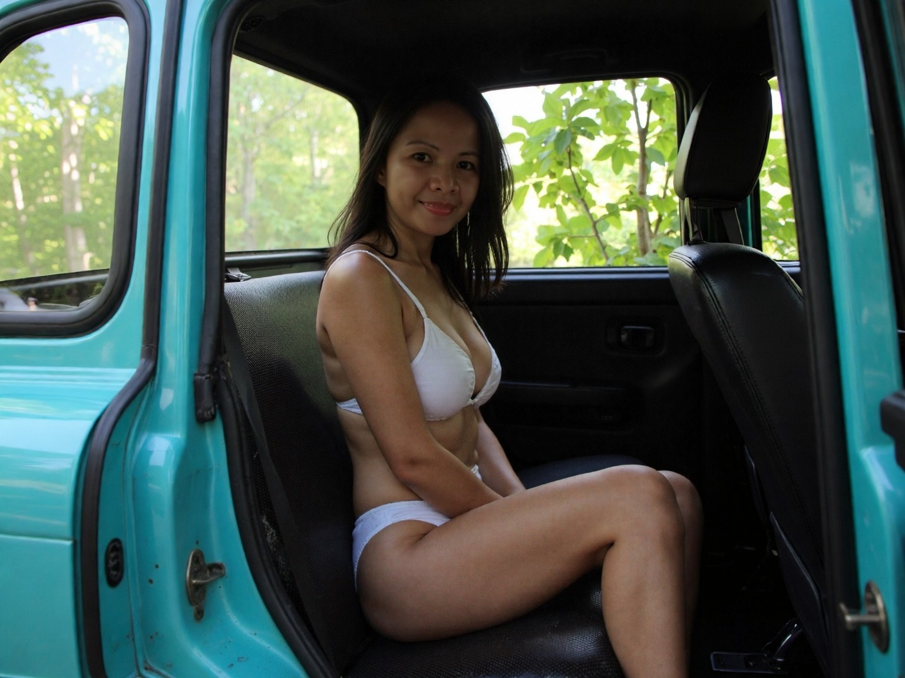

I
A quiet smile in the back seat, where the journey matters more than the destination.

II
Framed by the open door and summer light, she turns a passing moment into something personal.

III
A relaxed pose and a playful expression transform an ordinary car ride into a memorable pause.

IV
Stretching out comfortably, she lets the afternoon settle into its own quiet rhythm.

V
A familiar glance, soft and steady, held against the green blur beyond the window.

VI
Morning light through the trees, a fleeting frame suspended between adventure and comfort.

VII
Relaxed and unguarded, she turns an ordinary seat into a place worth remembering.

VIII
A warm glance and a calm presence, framed by summer greenery beyond the window.

IX
Sunlight and shadow play across the cabin as the afternoon drifts by.

X
The scenery changes outside the window, but the mood remains effortlessly calm.

XI
The last frame carries the same warmth that began the journey.